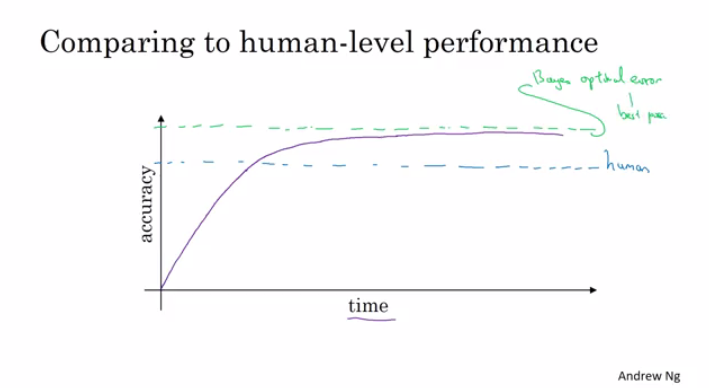

Reference from lecture slides of Andrew Ng and github repo from DeepLearning.ai-Summary
Table of contents
- Structuring Machine Learning Projects
- Table of contents
- Course summary
- ML Strategy 1
- Why ML Strategy
- Orthogonalization
- Single number evaluation metric
- Satisfying and Optimizing metric
- Train/Dev/Test distributions
- Size of the Dev and Test sets
- When to change Dev/Test sets and metrics
- Why human-level performance?
- Avoidable bias
- Understanding human-level performance
- Surpassing human-level performance
- Improving your model performance
- ML Strategy 2
- Carrying out error analysis
- Cleaning up incorrectly labeled data
- Build your first system quickly, then iterate
- Training and testing on different distributions
- Bias and Variance with mismatched data distributions
- Addressing data mismatch
- Transfer learning
- Multi-task learning
- What is end-to-end deep learning?
- Whether to use end-to-end deep learning
Course summary
Here are the course summary as its given on the course link:
You will learn how to build a successful machine learning project. If you aspire to be a technical leader in AI, and know how to set direction for your team’s work, this course will show you how.
Much of this content has never been taught elsewhere, and is drawn from my experience building and shipping many deep learning products. This course also has two “flight simulators” that let you practice decision-making as a machine learning project leader. This provides “industry experience” that you might otherwise get only after years of ML work experience.
After 2 weeks, you will:
- Understand how to diagnose errors in a machine learning system, and
- Be able to prioritize the most promising directions for reducing error
- Understand complex ML settings, such as mismatched training/test sets, and comparing to and/or surpassing human-level performance
- Know how to apply end-to-end learning, transfer learning, and multi-task learning
I’ve seen teams waste months or years through not understanding the principles taught in this course. I hope this two week course will save you months of time.
This is a standalone course, and you can take this so long as you have basic machine learning knowledge. This is the third course in the Deep Learning Specialization.
ML Strategy 1
Why ML Strategy
- You have a lot of ideas to improve the accuracy of your deep learning system:
- Collect more data.
- Collect more diverse training set.
- Train gradient decent longer.
- Try bigger network.
- Try smaller network.
- Try dropout
- Add L2 regularization
- Try different optimization algorithm “ex. Adam”
- Activation functions.
- This course will give you some strategies to help you analyze your problem to go in a direction that will get you a better results.
Orthogonalization
- Some deep learning developers knows exactly what hyperparameter to tune to achieve a specific task. This is called Orthogonalization.
- In Orthogonalization you have some controls, but each control does a specific task and doesn’t effect other controls.
- Chain of assumptions in machine learning:
- You’ll have to fit training set well on cost function. (Near human level performance if possible)
- If its not achieved you could try: bigger network - other optimization algorithm…
- Fit Dev set well on cost function.
- If its not achieved you could try: regularization - Bigger training set …
- Fit test set well on cost function.
- If its not achieved you could try: Bigger Dev. set …
- Performs well in real world.
- If its not achieved you could try: change dev. set - change cost function..
- You’ll have to fit training set well on cost function. (Near human level performance if possible)
Single number evaluation metric
- Its better and faster to set a Single number evaluation metric to your project before you start it.
Difference between precision and recall (In cat classification example):
Suppose we run the classifier on 10 images which are 5 cats and 5 non-cats. The classifier identifies that there are 4 cats. but he identified 1 wrong cat.
Confusion matrix:
- | | Cat | Non-Cat |
| —————- | —— | ———- |
| Cat | 3 | 2 |
| Non-Cat | 1 | 4 |
- | | Cat | Non-Cat |
Precision: percentage of true cats in the recognized result. per = 3/4
Recall: percentage of true recognition in the whole dataset. rec = 3/5
Accuracy= 3/10
Using a precision/recall for evaluation is good in a lot of cases they doesn’t tell you which is better. Ex:
| Classifier | Precision | Recall |
| ————— | ————- | ——— |
| A | 95% | 90% |
| B | 98% | 85% |A better thing is to merge precision and Recall together. There a something called
F1score- You can think of
F1score as average of Precision and RecallF1 = 2/ ((1/Per) + (1/Rec))
- You can think of
- IF you have a lot of value as your metric you should take the average.
Satisfying and Optimizing metric
Its hard sometimes to get a single number evaluation metric. Ex:
| Classifier | F1 | Running time |
| ————— | —— | —————— |
| A | 90% | 80 ms |
| B | 92% | 95 ms |
| C | 92% | 1,500 ms |In this case we can solve that by Satisfying and Optimizing metric. Ex:
1
2Maximize F1 # Optimizing metric
subject to Running time < 100ms # Satisficing metricSo as a general rule:
1
2Maximize 1 #Optimizing metric (One optimizing metric)
subject to N-1 #Satisficing metric (N-1 Satisficing metric)
Train/Dev/Test distributions
- Dev/Test set has to come from the same distribution.
- Choose Dev/Test sets to reflect data you expect to get in the future and consider important to do well on.
Size of the Dev and Test sets
- Old way of splitting was 70% training, 30% test.
- Old way of splitting was 60% training, 20% Dev, 20% test.
- The old way was valid for ranges 1000 —> 100000
- In the modern deep learning you have if you have a million or more
- 98% Training, 1% Dev, 1% Test
When to change Dev/Test sets and metrics
Lets take an example. In a cat classification example we have these metric results:
| Metric | Classification error |
| —————- | ———————————————————— |
| Algorithm A | 3% error (But a lot of porn images is treated as cat images here) |
| Algorithm B | 5% error |In the last example if we choose the best algorithm by metric it would be “A”, but if the users decide it will be “B”
Thus here we want to change out metric.
OldMetric = (1/m) * sum(y_pred[i] != y[i] ,m)- Where m is the number of Dev set items.
NewMetric = (1/sum(w[i])) * sum( w[i] * (y_pred[i] != y[i]) ,m)- where:
w[i] = 1 if x[i] is not pornw[i] = 10 if x[i] is porn
- where:
Conclusion: If doing well on your metric + Dev/test set doesn’t correspond to doing well in your application, change your metric and/or Dev/test set.
Why human-level performance?
- We compare to human-level performance because a lot of deep learning algorithms in the recent days are a lot better than human level.
- After an algorithm reaches the human level performance it doesn’t get better much.

- You won’t surpass an error that’s called “Bayes optimal error”
- There aren’t much error range between human-level error and Bayes optimal error.
- Humans are quite good at lot of tasks. So as long as Machine learning is worse than humans, you can:
- Get labeled data from humans.
- Gain insight from manual error analysis. (Why did a person get it right?)
- Better analysis of bias/variance
Avoidable bias
Suppose that the cat classification algorithm gives these percentages:
| Humans | 1% | 7.5% |
| ————————— | —— | —— |
| Training error | 8% | 8% |
| Dev Error | 10% | 10% |- In the left example, if the human level error is 1% then we have to focus on the bias.
- In the right example, if the human level error is 7.5% then we have to focus on the variance.
- In the latest examples we have used the human level as a proxy form Bayes optimal error because humans vision is too good.
Understanding human-level performance
- When choosing human-level performance, it has to be choose in the terms of what you want to achieve with the system.
- You might have multiple human-level performance based on the human experience. Then the system you are trying to build will choose from these human levels as set it as proxy for Bayes error.
- Improving deep learning algorithms is harder once you reach a human level performance.
- Summary of bias/variance with human-level performance:
- human level error (Proxy for Bayes error)
- Calculate
training error - human level error - If difference is bigger then its Avoidable bias then you should use a strategy for bias.
- Calculate
- Training error
- Calculate
dev error - training error - If difference is bigger then its Variance then you should use a strategy for Variance.
- Calculate
- Dev error
- human level error (Proxy for Bayes error)
- In a lot of problems Bayes error isn’t zero that’s why we need human level performance comparing.
Surpassing human-level performance
- In some problems, deep learning has surpassed human level performance. Like:
- Online advertising.
- Product recommendation.
- Loan approval.
- The last examples are non natural perception task. Humans are far better in natural perception task like computer vision and speech recognition.
- Its harder for machines to surpass human level in natural perception task.
Improving your model performance
- To improve your deep learning supervised system follow these guideline:
- Look at the difference between human level error and the training error. Avoidable bias
- Look at the difference between the training error and the Test/Dev set. Variance
- If number 1 difference is large you have these options:
- Train bigger model.
- Train longer/better optimization algorithm (Adam).
- NN architecture/hyperparameters search.
- Bigger training data.
- If number 2 difference is large you have these options:
- Get more training data.
- Regularization.
- NN architecture/hyperparameters search.
ML Strategy 2
Carrying out error analysis
- Error analysis is to analysis why the accuracy of the system is like that. Example:
- In the cat classification example, if you have 10% error on your Dev set and you want to solve the error.
- If you discovered that some of the mislabeled data are dog pictures that looks like cats, should you try to make your cat classifier do better on dogs? this could take some weeks.
- Error analysis approach (To take a decision):
- Get 100 mislabeled Dev set examples at random.
- Count up how many are dogs.
- if there are 5/100 is dogs then it doesn’t count to train your classifier to dogs.
- if there are 50/100 is dogs then you should work in that.
- Based on the last example, error analysis helps you to analyze the error before taking an action that could take lot of time with no need.
You can evaluate multiple ideas -Error analysis ideas- in parallel and choose the best idea. create an excel shape to do that and decide Ex:
| Image | Dog | Great Cats | blurry | Comments |
| —————— | ——— | ————— | ———- | ———— |
| 1 | ✓ | | | |
| 2 | ✓ | | ✓ | |
| 3 | | | | |
| 4 | | ✓ | | |
| …. | | | | |
| % totals | 8% | 43% | 61% | |In the last example you will decide to work on great cats or blurry images to improve your performance.
Cleaning up incorrectly labeled data
- Labeled data is incorrect when y of x is incorrect.
- If the incorrect labeled data is in the training set, Deep learning are quite robust to random error (Not systematic error). But its OK to go and fix these labels if you can.
If you want to check for mislabeled data in Dev/test set, you should also try error analysis with mislabeled column. Ex:
| Image | Dog | Great Cats | blurry | Mislabeled | Comments |
| —————— | ——— | ————— | ———- | ————— | ———— |
| 1 | ✓ | | | | |
| 2 | ✓ | | ✓ | | |
| 3 | | | | | |
| 4 | | ✓ | | | |
| …. | | | | | |
| % totals | 8% | 43% | 61% | 6% | |- Then:
- If Overall Dev set error: 10%
- Then Errors due incorrect data: 0.6%
- Then Errors due other causes:9.4%
- Then Errors due incorrect data: 0.6%
- Then you should focus on the 9.4% error rather than the incorrect data.
- If Overall Dev set error: 10%
- Then:
- Consider these while correcting the Dev/test mislabeled:
- Apply same process to your Dev and test sets to make sure they continue to come from the same distribution.
- Consider examining examples your algorithm got right as well as ones it got wrong. (Not always done if you reached a good accuracy)
- Train and (Dev/Test) data may now come from slightly different distributions
Build your first system quickly, then iterate
- The steps you take to make your deep learning project:
- Setup Dev/test set and metric
- Build initial system quickly
- Using the training data.
- Use Bias/Variance analysis & Error analysis to prioritize next steps.
Training and testing on different distributions
- A lot of teams are working with deep learning applications that has training sets that are different from the Dev/test sets due to the hanger of deep learning to data.
- There are some strategies to follow up when training set distribution differs from Dev/test sets distribution.
- Option one (Not recommended): shuffle all the data together and extract randomly training and Dev/test sets.
- Advantages: All the sets now are from the same distribution.
- Disadvantages: The other distribution that was in the Dev/test sets will occur less in the new Dev/test sets and that might not what you want to achieve.
- Option two: Take some of the Dev/test set examples and put them with the training distribution.
- Advantages: The distribution you care about is your target now.
- Disadvantage: the distributions are different. but you will get a better performance over a long time.
- Option one (Not recommended): shuffle all the data together and extract randomly training and Dev/test sets.
Bias and Variance with mismatched data distributions
- Bias and Variance analysis changes when training and Dev/test set is from different distribution.
- Example: Assume the cat classification example. Suppose you’ve worked in the example and reached this
- Human error: 0%
- Training error: 1%
- Dev error: 10%
- In the last example you’ll think that this is a variance problem, but because the distributions aren’t the same you cant judge this.
- Imagine if we created a new set called training-Dev set as a random subset of the training distribution. and we run error analysis and it came as follows:
- Human error: 0%
- Training error: 1%
- TrainingDev error: 8%
- Dev error: 10%
- Now you are sure this is a variance error.
- Suppose you have a different situation:
- Human error: 0%
- Training error: 1%
- TrainingDev error: 1.5%
- Dev error: 10%
- In this case you have something called Data mismatch problem.
- To conclude, first you’ll have a new set called training-Dev set which has the same distribution as training set. Then follow this:
- human level error (Proxy for Bayes error)
- Calculate
training error - human level error - If difference is bigger then its Avoidable bias then you should use a strategy for bias.
- Calculate
- Training error
- Calculate
Training-Dev error - training error - If difference is bigger then its Variance then you should use a strategy for Variance.
- Calculate
- Training-Dev error
- Calculate
dev error - training-dev error - If difference is bigger then its Data mismatch then you should use a strategy for Data mismatch.
- Calculate
- Dev error
- Calculate
test error - dev error - Is the degree of overfitting to Dev set
- Calculate
- Test error
- human level error (Proxy for Bayes error)
- Unfortunately there aren’t much systematic ways to deal with Data mismatch but the next section will try to give us some insights.
Addressing data mismatch
- Carry out manual error analysis to try to understand difference between training and Dev/test sets.
- Make training data more similar; or collect more data similar to Dev/test sets.
- There are something called Artificial data synthesis that can help you Make more training data.
- Combine some of your training data with something that can convert it to the Dev/test set distribution.
- Ex. Generate cars using 3D in a car classification example.
- Be careful with “Artificial data synthesis” because your NN might overfit these generated data.
- Combine some of your training data with something that can convert it to the Dev/test set distribution.
- There are something called Artificial data synthesis that can help you Make more training data.
Transfer learning
- Apply the knowledge you took in a task and apply it in another task.
- For example You have trained a cat classifier with a lot of data, you can use all the learning data or part of it to solve x-ray classification problem.
- To do transfer learning, delete the weights of the last layer of the NN and keep all the other weights as a fixed weights. Initialize the new weights and feed the new data to the NN and learn the new weights. Thats if you have a small data set, but if you have enough data you can retrain all the weights again this is called fine tuning.
- You can create a several new layers not just one layer to original NN.
- When transfer learning make sense:
- When you have a lot of data for the problem you are transferring from and relatively less data for the problem your transferring to.
- Task A and B has the same input X. (Same type as input ex. image, audio)
- Low level features from A could be helpful for learning B
Multi-task learning
- One NN do some tasks in the same time, and tasks can help each others.
- Example:
- You want to build an object recognition system that detects cars, stop signs, and traffic lights. (Image has a multiple labels.)
- Then Y shape will be
(3,m)because we have 3 classification and each one is a binary one. - Then
Loss = (1/m) sum(sum(L(Y_dash[i], Y[i]),3) ,m)
- In the last example you could have train 3 neural network to get the same results, but if you suspect that the earlier layers has the same features then this will be faster.
This will also work if y isn’t complete for some labels. For example:
1
2
3Y = [1 ? 1 ..]
[0 0 1 ..]
[? 1 ? ..]- And in this case it will do good with the missing data. but the loss function will be different:
Loss = (1/m) sum(sum(L(Y_dash[i], Y[i]),for all i which Y[i] != ?) ,m)
- And in this case it will do good with the missing data. but the loss function will be different:
- When Multi-task learning make sense:
- Training on a set of tasks that could benefit from having shared lower-level features.
- Usually amount of data you have for each task is quite similar.
- Can train a big enough network to do well on all the tasks.
- If you have a big enough NN, the performance of the Multi-task learning compared to splitting the tasks is better.
- Today Transfer learning is used more than Multi-task learning.
What is end-to-end deep learning?
- Some systems has multiple stages to implement. An end to end deep learning implements all these stages with a single NN.
Example:
Suppose you have a speech recognition system:
1
2Audio ---> Features --> Phonemes --> Words --> Transcript # System
Audio ---------------------------------------> Transcript # End to endEnd to end deep learning gives data more freedom, it might not use phonemes when training!
To build and end to end deep learning system that works well, we need a big dataset. If you have a small dataset the ordinary implementation of each stage is just fine.
Another example:
Suppose you want to build a face recognition system:
1
2
3Image->Image adjustments->Face detection->Face recognition->Matching # System.
Image ----------------------------------->Face recognition->Matching # End to end
Image->Image adjustments->Face detection------------------->Matching # Best imp for nowBest in practice now is the third approach.
- In the third implementation its a two steps approach where part is manually implemented and the other is using deep learning.
- Its working well because its harder to get a lot of pictures with people in front of the camera than getting faces of people and compare them.
- In the third implementation the NN takes two faces as an input and outputs if the two faces are the same or not.
Another example:
Suppose you want to build a machine translation system:
1
2English --> Text analysis --> ......................... --> Fresh # System.
English --------------------------------------------------> Fresh # End to endHere end to end deep leaning system works well because we have enough data to build it.
Whether to use end-to-end deep learning
- Here are some guidelines on Whether to use end-to-end deep learning.
- Pros of end to end deep learning:
- Let the data speak.
- Less hand designing of components needed.
- Cons of end to end deep learning:
- May need large amount of data.
- Excludes potentially useful hand design components. (It helps more on small dataset)
- Applying end to end deep learning:
- Do you have sufficient data to learn a function of the complexity needed to map x to y?
These Notes were made by Mahmoud Badry @2017